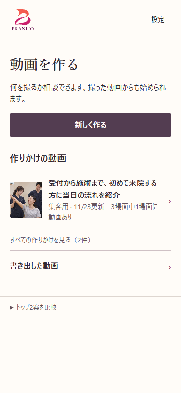

店舗スタッフとして、このページの画面を初めて開いたつもりで見てください。 次の3つは、それぞれ別の日の用事です。 1. 営業時間を「月〜土 9:00〜18:00、日曜休み」に変更したい。 2. 今日撮った4本の素材で、新しい採用動画を作りたい。 3. 昨日の来院案内の企画に、「仕上がり確認」の動画だけを足したい。 それぞれ、最初に押す場所を画面にある言葉で答えてください。 押した後に何が出ると思うか、その判断の手がかりも教えてください。 迷う候補があれば両方を挙げてください。
